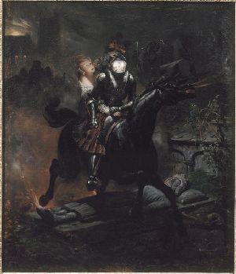
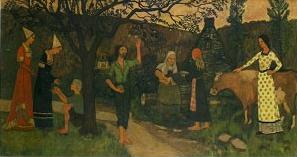

Le Frère de Lait
The Foster Brother
Dialecte de Tréguier
|
La traduction versifiée de la ballade parut en feuilleton, le 24 août 1839, dans la "Gazette de France" sous le titre "La Lénore bretonne", assortie d'un commentaire accusant le poème allemand auquel on se réfère d'avoir fait perdre toute originalité au sujet traité. Francis Gourvil (page 436 de son ouvrage déjà cité) accuse La Villemarqué d'avoir inspiré ces lignes, tout en ayant plagié la "Lénore allemande". - par de Penguern, t. 91,5: "Me am-boa ul lez-vamm" (frag.); - par Mme de Saint-Prix, t. 92, 94 de la collection Penguern: "Feunteun Gwazhaleg"; - par Luzel: "Gwerzioù" t. 1, "Ar plac"h he daou bried" (Plounévez-Moédec, 1867); "Gwerzioù" t. 2, "Ar wreg he daou bried" (Pluzunet, 1868). - par Bourgeois: dans ses "Kanaouennoù pobl", "Gwerz ur plac'h yaouank touellet" (Pontrieux). - par Guillerm: dans ses "Mélodies bretonnes de la campagne", "Al lez-vamm" , frag. (Tregunc, 1904); - par Herrieu, dans ses "Gwerzenneu ha sonenneu Breiz Izel": "Er voèz deu bried dehi" (Penquesten); - par Milin dans la revue "Gwerin" 2: "Ar plac'h div wech euredet". - par Ernault dans la revue "Mélusine", 1891: "La femme aux deux maris" (Trévérec); - par Guillerm, dans "Les chansons de France", 1910: "Al lez-vamm" (Trégunc, 1908); - dans "Brud" 5 (1958): "Al lez-vamm" (Glomel, 1957) Selon Luzel et Joseph Loth, cités (P. 389 de son "La Villemarqué") par Francis Gourvil qui se range à leur avis, la plus grande partie de ce chant mythique ferait partie de la catégorie des chants inventés . |
 |
The serialized verse translation of the ballad was published as from 24th August 1839, in the "Gazette de France" under the title "The Breton Lénore", preceded by comments to the effect that the German poem had deprived the narrative of its original features. Francis Gourvil (on page 436 of his already mentioned book) blames La Villemarqué for having inspired these lines, though he had plagiarized this very poem, the "German Lenore". However the text is in the Tréguier dialect. - by de Penguern, t. 91,5: "Me am-boa ul lez-vamm" (frag.); - by Mme de Saint-Prix, t. 92, 94 of the Penguern collection: "Feunteun Gwazhaleg"; - by Luzel: "Gwerzioù" t. 1, "Ar plac"h he daou bried" (Plounévez-Moédec, 1867); "Gwerzioù" t. 2, "Ar wreg he daou bried" (Pluzunet, 1868). - by Bourgeois: in his "Kanaouennoù pobl", "Gwerz ur plac'h yaouank touellet" (Pontrieux). - by Guillerm: in his "Mélodies bretonnes de la campagne", "Al lez-vamm" , frag. (Tregunc, 1904); - by Herrieu, in his "Gwerzenneu ha sonenneu Breiz Izel": "Er voèz deu bried dehi" (Penquesten); - by Milin in the periodical "Gwerin" 2: "Ar plac'h div wech euredet". - by Ernault in the periodical "Mélusine", 1891: "La femme aux deux maris" (Trévérec); - by Guillerm, in "Les chansons de France", 1910: "Al lez-vamm" (Trégunc, 1908); - published in "Brud" 5 (1958) as "Al lez-vamm" (Glomel, 1957). According to Luzel and Joseph Loth, quoted by Francis Gourvil (p. 389 of his "La Villemarqué"), most of this mythical song was " invented " by its alleged collector. |
Ton
(Arrt MIDI en Fa majeur par Chr. Souchon)
| Français | Français | English |
|---|---|---|
|
I
|
I
1. Gwenola, la plus belle ainsi que la plus sage Des filles des seigneurs de notre voisinage A la Saint-Corentin avait eu dix-huit ans: Sa mère et ses deux sœurs avaient depuis longtemps 2. Laissé leur place vide Au banc commun de l'âtre; Tous les siens étaient morts Excepté sa marâtre. 3. C'était pitié, vraiment, De la voir chaque jour Assise, seule, en pleurs, Au perron de la tour 4. Cherchant, hélas en vain, Comme au ciel une étoile, A l'horizon des mers, Cherchant la blanche voile, 5. Qui devait ramener Son espoir, son sauveur Le seul être ici-bas Qui l'appelât sa sœur. 6. - A qui rêvez-vous donc? Allez garder la vache; Je ne vous nourris pas Pour chômer, que je sache. 7. Trois heures avant l'aube Il fallait se lever Pour allumer le feu, L'hiver et tout laver. 8. Tout ranger au manoir Aller à la fontaine Avec un seau fêlé, Dans le fond de la plaine. 9. La nuit était obscure Et l'eau trouble; un guerrier Se tenait sur le bord Près de son destrier. 10. - Dites-moi, jeune fille, Etes-vous fiancée fiancée? - Moi, (que j'étais enfant Et sotte et sans pensée!), 11. Je dis: - Je n'en sais rien. - Vous ne savez? Comment? - Avez-vous un époux? - Un époux? Non vraiment! 12. - Hé bien! Prenez ma bague! Et sache votre mère Qu'un jeune chevalier Qui revient de la guerre. 13. Dont le page a péri Qui lui-même est blessé, Vous a donné ce gage Et vous est fiancé. 14. Mais qu'il doit revenir Guéri de sa blessure, Vous chercher dans un mois Et trois jours, je le jure! - 15. Il part; elle regarde En tremblant l'annelet: C'était la bague d'or De son frère de lait! II 16. Il s'était écoulé Deux, trois, quatre semaines Sans que le chevalier Reparût aux domaines. 17. - Vous êtes jeune, et moi je vais bientôt mourir Ma fille, il faut pourtant songer à l'avenir. Je vous trouve un parti qui me semble fort sage, Le jeune homme vous aime, il s'entend au ménage. 17 bis. Il est doux, économe, et cité par chacun Enfin c'est un mari comme il vous en faut un. 18. - Si vous le permettez, J'épouserai mon frère: Il est depuis un mois, De retour de la guerre. 19. Il m'a donné sa bague. Il est mon fiancé; Son jeune page est mort et lui-même est blessé, Mais il sera bientôt guéri de sa blessure. Il me viendra chercher; il a dit: - Je le jure! - 20. - Que murmurez-vous là? Sortez, sortez d'ici; Allez! Je n'entends pas Qu'on me raisonne ainsi; 21. Vous épouserez Job, 22. - Un valet d'écurie! Ah si ma pauvre mère! Etait encore en vie! 23. - Sortez, vous dis-je, allez Pleurnicher dans la cour!; Dans trois jours nous mettrons Bon ordre à votre amour- III 24. Le fossoyeur allait De village en village En sonnant sa sonnette, Accomplir son message. 25. - Venez, jeunes et vieux Venez, venez prier; C'est pour l'âme qui fut Monsieur le chevalier. 26. Blessé mortellement, il revint de la guerre Mourir au vieux manoir dans les bras de sa mère. Venez prier pour lui: c'était un bon chrétien; Il fut homme de cœur. Il fut homme de bien. 27. Au coucher du soleil aura lieu la veillée Puis après, le convoi passera dans l'allée. Venez, jeunes et vieux, venez,venez prier, C'est pour l'âme qui fut monsieur le chevalier. - IV 28. - Sans attendre la fin, Vous quittez la partie? - Si je pars? Je devrais Déjà être partie. 29. - Je n'y puis plus tenir Et suis toute en émoi, De trouver un bouvier Face à face avec moi. 30. - Elle me fait pitié, Cette pauvre petite! Dans la paroisse entière, On la plaint, l'on s'irrite! 31. A la voir ce matin pleurer de tout son cœur, Tout le monde pleurait, et même le recteur. Tout le monde pleurait dans l'église en prière Tous, et jeunes et vieux, tous, hors la belle-mère. 32. En revenant du bourg, Plus le biniou sonnait, Plus on la consolait, Plus son cœur se fendait. 33. A la place d'honneur, A table on l'a conduite, Elle n'a pu manger Morceau qui lui profite. 34. On a voulu la prendre Et la déshabiller; Elle a jeté sa bague, Et brisé son collier; 35. Déchiré ses rubans, Son bandeau, pris la fuite, Les cheveux en désordre: On est à sa poursuite. - V 36. Les flambeaux étaient morts; Le manoir sommeillait. Seule au hameau voisin Gwenolaïk veillait. 37. - Qui frappe là? - C'est moi! - Comment, c'est toi! mon frère! -. Et, franchissant d'un bond Le seuil de la chaumière, 38. Elle était dans ses bras. Et le cheval a fui, Les emportant tous deux, elle derrière lui, L'entourant de ses bras comme d'une ceinture, Et livrant à la nuit sa noire chevelure. 39. - Dieu! que nous allons vite! Il me semble vraiment Que nous avons franchi La plaine en un moment! 40. Est-elle encore loin, Mon frère, ta demeure? - Tiens-moi bien, nous allons Arriver tout à l'heure. 41. - Que je me trouve heureuse ici derrière toi! - (Cependant les hiboux avec des cris d'effroi, Fuyaient de toutes parts vers leurs sombres demeures.) - Sommes-nous encor loin? - Tiens-moi bien!... Tout à l'heure! 42. - Je te trouve bien beau, Mon frère, et bien grandi! Que ton cheval est souple Et son galop hardi! 43. Et ton casque brillant Et claire ton armure! Mais au moins, es-tu bien Guéri de ta blessure? 44. Tes cheveux sont mouillés; Dieu! ton cœur est glacé! Tu me sembles avoir Bien froid, mon fiancé. 45. Sommes-nous encor loin, Dis, - Non, non! tout s'apprête, N'entends-tu pas les sons Du biniou de la fête? - 46. Le cheval à ces mots S'arrête tout fumant, Et tressaille en poussant Un long hennissement 47. A leurs regards s'offrait Une belle prairie, Mille danseurs joyeux Foulaient l'herbe fleurie. 48. Des arbres aux fruits d'or, Et la mer alentour, Et sur les monts au loin, Les premiers feux du jour. 49. Un ruisseau clair et pur Parcourait la prairie Des âmes y buvant Revenaient à la vie. 50. Ce n'était que chansons Et fête en tous les cœurs Gwenola retrouva Sa mère et ses deux sœurs. VI 51. Traduction: La Villemarqué, 1839 |
I
|

'L'âge d'or ou le Cueilleur de pommes' de Paul Sérusier
Cliquer ici pour lire les textes bretons (versions imprimée et manuscrite).
For Breton texts (printed and ms), click here.

|
Résumé
Une mystérieuse histoire où l'on trouve une description de l'Ile d'Avalon dont parlent les romans de la Table Ronde. Gwenola est marié de force par sa marâtre à un valet d'écurie, trois semaines après que son bien-aimé, son frère de lait, lui ait fait cadeau d'un anneau de fiançailles. Son fiancé meurt dans une bataille près de Nantes. Le soir des noces, Gwenola s'enfuit de la maison. Son frère de lait - qui avait juré de revenir- apparaît, la fait monter sur la croupe de son cheval blanc et les voilà partis au grand galop dans un vacarme qui effraie les hiboux et les bêtes sauvages. Le cheval s'arrêta sur une île où une foule de gens dansaient, où des garçons et de jolies jeunes filles se tenant par la main faisaient la ronde autour d'arbres verts chargés de pommes et éclairés par le soleil levant. Une fontaine claire y coulait; des âmes y buvant revenaient à la vie. La mère de Gwenola était parmi elles, ainsi que ses deux sœurs: ce n'était que plaisirs, chansons et cris de joie. Le lendemain matin, au lever du soleil, on portait à l'église le corps sans tache de Gwenola. Fidèle malgré la mort: Un thème souvent traité La Villemarqué expose dans l'"argument", que cette ballade se chante dans plusieurs parties de l'Europe, et, à partir de l'édition de 1845, que l' l'Abbé Henry lui en a procuré plusieurs variantes. Ils prolongent ainsi le travail d'Alan Jamieson (1780 - 1844) qui avait traduit ainsi dans ses "Popular songs translated from ancient Danish" d'autres chants danois ayant une intrigue similaire: "Sweet William and Fair Annie", "Clerck Saunders", "Willie and May Margaret". La Villemarqué nous apprend en outre que c'est aussi le sujet d'un chant gallois: le héros qui revient chercher sa promise ou son épouse pour être unie avec elle dans l'au-delà. Un thème païen s'il en fut que le "Corpus Poeticum Boreale" relie à l'un des livres constituant l' "Edda poétique" islandaise, un corps de poèmes qui ont vu le jour entre 800 et 1300. Il s'agit de la "Helgakvida, Hundingsbana II" qui relate l'histoire de HELGI ET SIGRUNE , son épouse, une walkyrie. Celle-ci, après la mort du héros, vient dormir entre ses bras dans le tertre où il repose. F-M. Luzel a collecté dans ses "Gwerzioù Breiz-Izel, tome 1" deux autres versions de la même ballade et les a intitulées "Ar plac'h he daou bried", "La fille aux deux époux" . Le musicien Maurice Duhamel a recueilli trois mélodies sous ce titre. A. Le Mercier et Alfred Bourgeois, dans "Kanaouennoù Pobl" (chants recueillis dans la seconde moitié du XIXème siècle), ont, chacun de leur côté, noté deux autres airs Toutes les trois ont un air de famille avec la mélodie du "Barzhaz": Dans le tome 2, des "Gwerzioù", Luzel publie deux autres versions de cette "Gwreg he daou bried" (une situation tragi-comique qui le conduira à en reprendre une, sans changement, dans ses "Sonioù"): Le chant populaire original Cependant, l'épisode surnaturel de la chevauchée qui se termine dans un au-delà celtique à souhait, avec Île aux pommiers et Fontaine de jouvence, ne figure pas dans ces quatre versions. Pas plus, du reste, que dans la dizaine de vers notée, sans retouches, par La Villemarqué dans le premier manuscrit de Keransquer et qui commence par "N'eus ket e-barzh ar bed" . Il n'y est question que de la rencontre à la fontaine de la jeune fille martyrisée par sa belle-mère et d'un cavalier qui revenait de Nantes. Celui-ci dépose sur les genoux de la belle une bague d'or et un anneau doré et lui promet de revenir dans cinq ans, jour pour jour, lui apporter quelque chose. L'acte sexuel y est évoqué par le symbole de l'eau troublée. M. Donatien Laurent cite dans ses "Sources du Barzaz Breiz", plusieurs occurrences d'un chant similaire: dans la collection de Penguern, dans les recueils de Bourgeois, Guillerm et Herrieu, ainsi que dans des articles publiés dans divers périodiques. Quant à Mme Eva Guillorel , c'est près d'une centaine de références qu'elle cite dans sa thèse de doctorat "La complainte et la plainte" (consultable en ligne). Elle s'appuie sur la classification par thèmes des chants populaires de tradition orale en langue bretonne établie en 1998, par M. Patrick Malrieu , dans la droite ligne du "Motif Index of Folk Literature" de Antti Aarne et Stith Thompson ("AT-number system" dont la 1ère version remonte à 1910. Cet index est à la tradition orale, ce qu'est aux finances le plan comptable international: un lit de Procuste dont rêve et réalité ont bien du mal à s'accommoder) . Les titres qui reviennent le plus souvent sont: " (Me am-boa ul) lezvamm" , "Feunteun Gwazh-Halek", "Ar plac'h yaouank touellet" , "Ar vaouez (plac'h, wreg) he daou bried" , "Ar plac'h div wech dimezet (euredet)": J'avais une marâtre, la fontaine de Gwazhalek, la jeune fille abusée, la femme (fille) aux deux (fiancés) maris. On est gêné pour traduire "dimezi" qui signifie tantôt "mariage", tantôt fiançailles, les deux options ayant à l'évidence, dans l'ancienne société, le même degré d'irrévocabilité. Quatre chansons en une La forme la plus aboutie du récit se trouve chez Luzel, version 3 en 46 strophes , chantée par l'incontournable Marguerite Philippe: On passe ainsi, par agrégations successives, de la chanson gaillarde française, où la "Fille à la fontaine avant soleil levé" explique son retard par l'eau troublée, "Tous les oiseaux du village s'y étant venus baigner", à une pathétique gwerz à la mode de Bretagne, la "Fille aux deux maris". Dans celle-ci, les lieux et les personnages sont, en apparence du moins, précisément identifiés. Elle reflète une réalité sociale locale - qui n'est d'ailleurs pas propre à la Bretagne -: la conscription de 7 ans et la pêche lointaine (Terre-Neuve) qui séparaient les époux pendant plusieurs années et conduisaient à ces situations de double mariage. "Brave marin revient de guerre, tout doux": Outre la chanson populaire , la littérature, depuis le 16ème siècle ("Marguerite d'Angoulême de l'Heptaméron), et le cinéma se sont souvent emparés de ce thème: on ne citera que le chef d'œuvre de Balzac "Le colonel Chabert" et le film de Daniel Vigne, le "Retour de Martin Guerre" (1982). Les spécialistes donnent à ce type de gwerz qui puise à des sources extérieures au domaine où elles sont chantées, le nom de gwerz "exogène" , tandis que L' orpheline de Lannion est, au contraire, l'archétype de la gwerz "endogène". L'imagination au pouvoir! Les titres cités plus haut n'évoquent, à première vue, ni l'île d'Avalon, ni l'au-delà. Ici encore, il semblerait, que le jeune La Villemarqué, n'ait pu résister à la tentation d'embellir l'histoire en empruntant à Bürger l'essentiel de sa ballade "Lenore", tout en "celtisant" sa description de l'au-delà. Cela lui permet de citer, dans sa "note": Procope, la "Vie de Merlin" de Geoffroy de Monmouth, le Roman de "Guillaume au court nez" et le lais de Marie de France où le héros, "Lanval", est emporté en Avalon sur le cheval de la fée. Et de continuer par une longue description des cérémonies funèbres célébrées en Basse-Bretagne où intervient le fossoyeur et sa clochette. Sans cette cérémonie, pense-t-on, l'âme n'est pas admise en ces lieux délicieux... On ne peut toutefois pas exclure que La Villemarqué ait disposé, outre la version courte qui figure dans son carnet de collecte, d'un autre chant où se trouvait cette histoire de frère de lait et de revenant. Sur son manuscrit, le barde évoque "une autre version, [où] elle quitte le château de son mari et vient mourir sur le seuil de la porte de son père." On remarquera les similitudes, sous certains aspects -d'origine ou ajoutés -, entre ce chant et |
Résumé
A mysterious story with a description of the Isle of Avalon , mentioned in the Arthurian cycle. Gwenola is married off by force by her step-mother to a stable boy, three weeks after her betrothal with her dear foster-brother who had given her a wedding-ring. Her betrothed dies in a battle near Nantes. In the evening of her wedding, Gwenola flees from the house. Her foster-brother, who had sworn he would come back, appears, takes her on his white horse in saddle behind and off they ride at full speed, making a noise that frightens the owls and the wild animals. The horse stopped on an island where young men and beautiful young girls, holding each other by the hand, played about green trees, laden with apples and lit behind by the sun, rising on the mountains. A clear fountain flowed there; souls, to life returning, were drinking there. Gwenola's mother was with them, and her two sisters also: there was nothing there but pleasure, songs and cries of joy. On the morrow morning, at the rising of the sun, they carried to the church the spotless body of little Gwenola. Loyalty beyond death: A matter often dealt with In his introduction to the song, La Villemarqué mentions that the song is spread all over Europe, and as from the 1845 edition, that several variants of it were contributed by his friend, Abbé Henry . In doing so, they prolonged the work of Alan Jamieson (1780 - 1844) who had published "Popular songs translated from ancient Danish", including pieces with a similar plot: "Sweet William and Fair Annie", "Clerck Saunders", "Willie and May Margaret". La Villemarqué mentions that a song to the same topic exists in North Wales: a dead hero comes and fetches his bride or his wife in order to be united with her in the otherworld. This definitely heathen theme is, so say the authors of the "Corpus Poeticum Boreale", rooted in one of the texts included in the "Poetic Edda", a collection of Islandic poetry written about 1300, whose oldest elements may be traced as far back as 800. Namely, the "Lay of Helgi, the Slayer of Hunding - 2nd Book, recounting the story of HELGI AND SIGRUNE , his wife who was a Valkyrie. After her husband's death she orders a bed to be put up in his burial barrow, to sleep with him in. F-M. Luzel collected in his "Gwerzioù Breiz-Izel" two other (incomplete) versions of the same ballad and titled them "Ar plac'h he daou bried", "The bride and her two husbands" . The musician Maurice Duhamel gathered three melodies under this title. Between the three of them and the "Barzhaz" melody there is a family likeness: In Part 2 of his "Gwerzioù", Luzel publishes two more versions of this "Wife with two husbands" (due to the tragi-comic plot one of them will be included, without changes, in his "Sonioù"): The original folk song However, you would search in vain in these foue versions for the supernatural episode of the ride into an other-world which is as Celtic as one could wish, with its sacred Isle of the Apple trees and its Fountain of Youth. No such thing either, in the score of lines jotted down, without alteration, by La Villemarqué in the first copybook of Keransquer . They begin with "N'eus ket e-barzh ar bed" and recount only the encounter, by the fountain, of the poor girl that is ill-used by her stepmother with a trooper coming back from Nantes. Ha laid on her lap a gold ring and a gilded chain and promises to come back with a present in five years to the day. The sexual intercourse is hinted at by the symbol of the clouded water. M. Donatien Laurent quotes in his "Sources du Barzaz Breiz", several instances of similar songs: in the Penguern collection of MSs, in the books of Bourgeois, Guillerm et Herrieu, as well as in many articles to be found in diverse periodicals. On the other hand, Mme Eva Guillorel , quotes no less than nearly a hundred items in her doctoral thesis on "Complaint an lament song" (which may be consulted online). She avails herself of the "Motif index of oral literature in Breton language" set up in 1998, by M. Patrick Malrieu in the wake of the Antti Aarne et Stith Thompson "Motif Index of Folk Literature" (the "AT-number system" whose 1rst release dates back to 1910. It is to oral tradition what the International Accounting Plan is to business: a Procrustes' bed that hardly fits imagination or reality). . The most often quoted titles are: " (Me am-boa ul) lezvamm" , "Feunteun Gwazh-Halek", "Ar plac'h yaouank touellet" , "Ar vaouez (plac'h, wreg) he daou bried" , "Ar plac'h div wech dimezet (euredet)": I had a stepmother, Gwazhalek Fountain, the raped girl, the wife (girl) with two (fiancés) husbands. It is not easy translating the word "dimezi", as it means now "marriage", now "betrothal", both options being clearly equally irrevocable in olden times. Four songs in one lament The most elaborated narrative is to be found in Luzel's version 3 in 46 stanzas , noted from the singing of the famous Marguerite Philippe: Thus, by dint of combining diverse elements, the bawdy French song of the "Girl by the fountain before day dawn" who imputes her delayed coming home to "all the town's birds that bathed in the water and made it muddy", was turned into a heartbreaking "gwerz e giz Breizh" (lament in Brittany's fashion), titled "The girl with two husbands". In the "gwerz", places and characters are, apparently at least, precisely identified and the story informs us of local social reality experiences that are, by the way, no distinctive characteristics of Lower Brittany: young men who had to serve a 7 year conscription or sailors engaged in Newfoundland cod fishing were parted from their wives for several years. It often led to these cases of twofold matrimony. "Brave marin revient de guerre, tout doux" ("A brave sailor comes home from war") is not only the first line of a popular French song. "Serious" literature has been dealing with such dramatic events since the 16th century (the tale "Marguerite d'Angoulème in the "Heptameron") and so has the film industry of late: suffice it to mention here Balzac's masterwork novel "Colonel Chabert" and Daniel Vigne's movie, "Martin Guerre's return" (1982). Scholars dub this kind of gwerzioù that draw their substance from sources located outside the area where they are sung, as "exogenous gwerz ioù". The Orphan of Lannion is, on the contrary, an archetypal instance of an "endogenous" gwerz. Boundless fantasy? The titles above are not, at first sight, likely to provide a link to the Isle of Avalon and the Celtic otherworld. Here again, the chances are that young La Villemarqué could not resist the temptation to adorn his song by borrowing from Bürger most of his ballad "Lenore", which he "celticized" by an apt description of the beyond. Thus he was authorized to quote in an explanatory "note": Procopius, Geoffrey of Monmouth's "Life of Merlin", the Romance of "William Short-Nose" and the lay of Marie de France where the hero, "Lanval", goes to Avalon riding on the fairy's horse. And to append a long description of the funerals celebrated in Lower Brittany, featuring a gravedigger swinging his bell. But for this ceremonial, the dead soul, in the folks' opinion, was denied entry to the delightful abodes... However, we cannot exclude that La Villemarqué might have had, beside the short version in his collecting notebook, another song where he found this story of a ghost foster-brother. In a margin note on his MS, the Bard mentions "another version [in which] she leaves from her husband's manor for the house of her father where she dies on the threshold". whether they are genuine pieces or mere artefacts, there are remarkable similarities between this song and the following ballads: |
(Autre arrangement par Chr. Souchon)